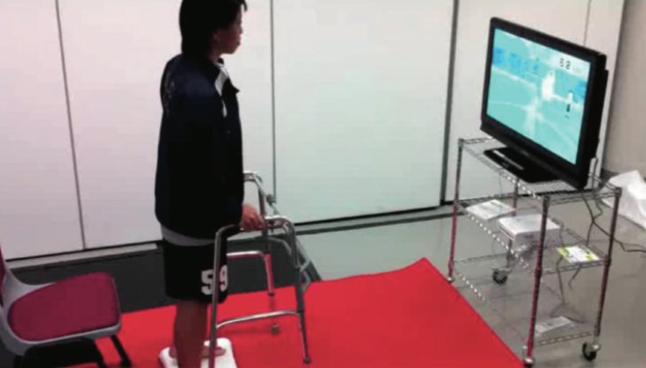
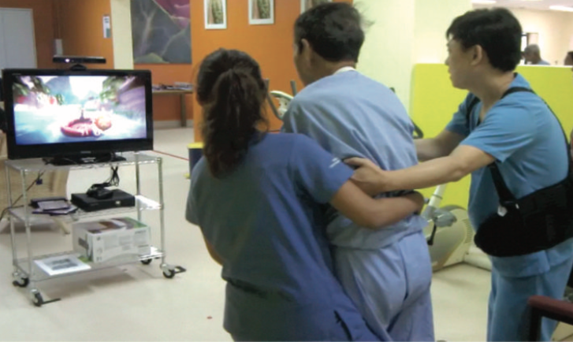

Lab Meeting
Weekly Journal Discussion
Does the Inclusion of Virtual Reality Games within Conventional Rehabilitation Enhance Balance Retraining after a Recent Episode of Stroke?
(2013)
Week 4
Stroke
- Global death from stroke had reduced in most contries
- But the demand for poststroke rehabilitation services is increased
Rehabilitation using VR
- Limited evidence of Virtual Reality (VR) vs Conventional
rehabilitation (CR) in term of arm funcion and ADL
- Conflicting evidence that performance gains in VR are
seldom transferred to real-world
Amount of therapy time and functional outcomes
- More time spent on gait training - better outcomes
- However, patients after stroke only receive around
44 minutes of physical therapy a day
Objective of the paper
To evaluate if
including VR balance related games during inpatient rehabilitation sessions
without increasing therapy time
would contribute to balance recovery among inpatients after a recent episode of stroke.
- Participants are assigned to treatment conditions at random
- All participants in all study groups are treated the same except
for the factor that is unique to their group
- An experiment which attempts to eliminate subjective
- Neither the participants nor the researchers know which
participants belong to the control group, nor the test group
Subjects
- A total of 19 inpatients
(age: M=61.6; SD=7.8)
- First onset of stroke
(days after stroke; mean = 14.85 ± 6.8)
- Assessed by Modified Rankin Scale (mRS) as moderate
or moderate severe disability (3 or 4 out of 6)
- Mini-Mental State Examination (MMSE) score is greather
than 23
Experimental Protocol
- Control group receives 60 minutes of conventional rehabilitation (CR)
- Experimental group receives 40 minute of CR and 20 minutes of VR
- Experimental group was introduced to either Wii-Fit or Kinect


Outcome Measures
- Evaluate by researcher who is not involved in interventions
- Functional Reach Test (FRT), Timed Up and Go (TUG),
Berg Balance Scale (BBS), Centre of Pressure (CoP),
and Modified Barthel Index (MBI) were assessed before
and after the intervention period.
Data Analysis
- Data were not normally distributed
-
Mann-Whitney U tests were used for between-group differences
at baseline and after intervention
-
Wilcoxon sign ranked test was used to determine within-subject
changes between the baseline and post-intervention values in
both groups
Between Groups
- No significant differences in baseline of
all measures
in both groups
- After 15 sessions, FRT scores was spot significant difference
Within Experiment Group
- Significantly improved in
TUG
, FRT and
MBI
scores
Within Control Group
- Significantly improved in TUG and MBI scores
- Introducing VR within the standard treatment
time of CR was equally effective as CR alone
- What VR group got more is FRT which is strongly
correlated with
BBS
- Their finding support the hypothesis that VR balance
related game was more effective than CR as it improves
load-unloading sway strategy at the hip
- CR lacks of interest by patient
- Physical therapist should work with professional media
creator in order to create game
Limitations
- Too small sample size (expected > 50 for each group in future study)
- The measurements could possibly be cosidered as false positive
- Well-designed game based on therapeutic principles will empower patients to be involved in their rehabilitation